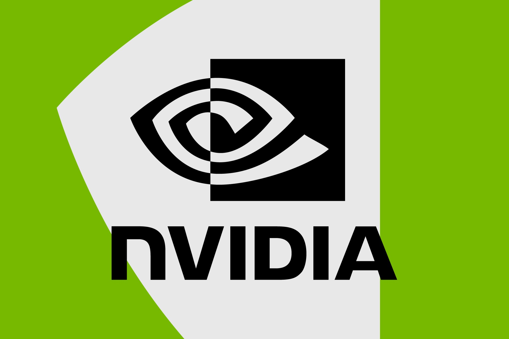

«Нью-Йорк таймс» выяснила: в перечень китайских компаний, которым Минторг США разрешил работать с чипами Nvidia H200, вошла фирма New Matrix, которая внешне просто не существует. Журналисты приехали по её пекинскому адресу и увидели «полую серую коробку с проводами, свисающими с потолка там, где должны быть лампы». В справочнике здания компании нет, администрация индустриального парка о ней тоже ничего не слышала. Самой New Matrix всего 17 месяцев, информации о ней в сети почти нет — при этом её владельцы связаны с китайским инвестиционным фондом, который США внесли в чёрный список ещё в 2024 году.
При Байдене продажу передовых чипов Китаю жёстко ограничили. Администрация Трампа вернула H200 в продажу после того, как Nvidia согласилась отдавать долю выручки с китайских поставок в американский бюджет, — и с тех пор Минторг выборочно одобряет китайские компании, которым можно собирать из H200 ИИ-серверы. The Verge обращает внимание: ни Минторг, ни сама Nvidia проверкой контрагентов должной тщательности, судя по описанному, не занимаются.
По данным NYT, New Matrix — уже вторая одобренная компания, у которой нет никакого физического присутствия по адресу регистрации. Газета называет это не досадной ошибкой, а «тревожной закономерностью»: фирмы, аффилированные с организациями из торговых ограничительных списков, раз за разом проходят одобрение. Отдельного официального анонса здесь нет и быть не может — речь о журналистском расследовании, и ни Минторг США, ни Nvidia в день публикации опровержений не выпустили.
Согласованные списки «одобренных покупателей» для самых дефицитных чипов мира пока работают не лучше списков в журнале регистрации ИП: чипы для призраков — вполне рабочая схема.